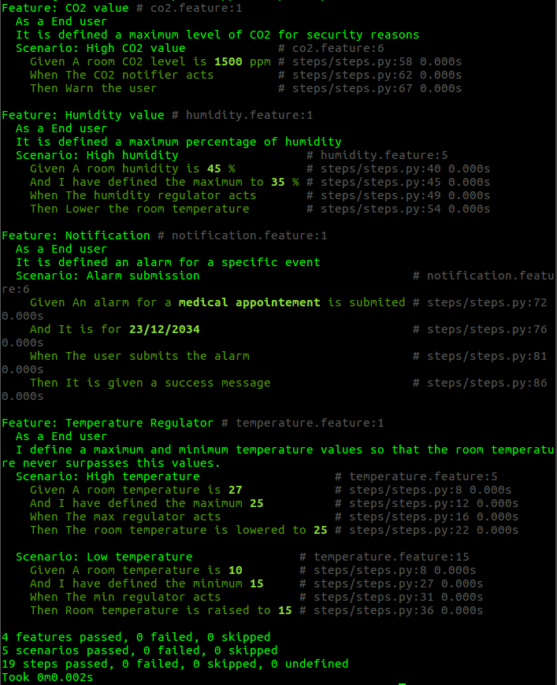

Requirements and Tests¶
Software Requirements and Specification¶
System Requirements¶
Our system will be accessible through a web dashboard that can be open in any browser, what requires Internet connection. For this project to be successful, it must respect the following quality attributes:
- Reliability: the system must remain operational during time.
- Performance: the system must answer fast to the user requests with low response times to the clients.
- Suport: the system must have sufficient capacity to adapt to the requirements of its customers.
- Safety: the system must have the ability to withstand attempts to access of unprivileged users.
- Usability: the system must present documentation (for example a manual user) in order to help the users if they need.
- Interoperability: the system must be able to communicate with other systems and to exchange information between itself and the other systems.
The interface of the web dashboard must be intuitive in order to facilitate the adaption of the user.
Now, it will be presented a set of detailed requirements for the system.
Operating Environment¶
- OE-1: Domotics must be available in the following browsers: Google Chrome, Mozilla Firefox, Safari, Opera and Microsoft Edge.
- OE-2: Domotics is a user interface only available to web browsers.
Design and Implementation Constraints¶
- CO-1: All the code written with JSF must correspond to the JSF technology.
- CO-2: The system must store all its information in a PostgreSQL database.
Considerations and Dependencies¶
- Considerations:
- AS-1: The web dashboard is available 24/7 and it’s updated every second.
- AS-2: Only users with valid credentials can access the dashboard.
- AS-3: Only users living in the house in question with permissions can access the dashboard.
- Dependencies:
- DE-1: The values obtained by the sensors will only be updated if the sensors are working.
Business Requirements¶
The following are the Business Rules (BR) specifications for Domotics:
- BR-1: All values must be updated in realtime.
- BR-2: Only users with valid credentials can have access to the web dashboard.
- BR-3: Only users must be identified.
- BR-4: Sensors must be replaced or fixed if they are not working.
Functional Requirements¶
- FE-1: When a trigger situation event happens, an alert must be send.
- FE-2: The information must be processed and displayed in realtime.
- FE-3: The user must be able to check future events in the calendar.
- FE-4: It must be displayed for the user, realtime and previous information.
- FE-5: Provide access to the system through any browser.
External Interface Requirements¶
Below are the specifications of external interface requirements for communication with the Domotics system, categorized by the name of each section to which they belong.
User Interaction Interfaces¶
- UI-1: The webpage in its desktop version should be simple and intuitive.
- UI-2: Users should easily switch between realtime and historic data.
Interactions with the Software¶
- SI-1: Consult System:
- SI-1.1: Check realtime data.
- SI-1.2: Check previous data of all day.
- SI-1.3: Check future events.
- SI-1.4: Check average values of the day obtained from processing the values obtained by the sensors.
- SI-2: Notifications System:
- SI-2.1: Notifications are displayed for the user when some value is above/below the threshold.
Interactions with Hardware¶
- HI-1: The sensors should be working correctly.
- HI-2: The sensors should communicate and send values to the broker.
Communication Interfaces¶
- CI-1: The system will send notifications to the user when some value is not normal.
Quality Attributes¶
Below are the specifications of quality attributes to which the Domotics system will have to obey, categorized by the name of each section to which they belong.
Usability Requirements¶
- USE-1: 90% of the users of the Domotics system, must be able to use the user interface without having to consult the documentation.
- USE-2: Users should be able to see previous and future events.
Performance Requirements¶
- PER-1: The webpage must complete the download after 5 seconds for an Internet connection of 30 Mbps or more.
- PER-2: The values from the sensors should be displayed in realtime in the dashboard.
- PER-3: In case of trigger event the dashboard must display a warning alert.
Security Requirements¶
- SEC-1: All the data from the users must be encrypted.
- SEC-2: Users must log in to be able to access the dashboard and all its features.
- SEC-3: All the users must be registered in the web platform.
Protection Requirements¶
- SAF-1: The user must be able to monitor in realtime, only the values sent by the sensors installed in his or her house.
Availability Requirements¶
- AVL-1: The web dashboard will be accessible 24/7.
- AVL-2: The sensors must be working 24/7.
Robustness Requirements¶
- ROB-1: If the client loses the connection with the web platform before entering data for a future event in its entirety, they must be presented to the user when the user logs in again.
User requirements¶
- UR-1: Monitorize in real time all wanted aspects at home.
- UR-2: Acess historic information.
- UR-3: Alert to something that is not supose to be happening e.g. temperature higher than 30ªC.
Tests¶
To do the behaviour-driven development (BDD) testing we had to be able to mimic or mock the behaviour of external dependencies so in order to do this, we went with the software Behave. We chose Behave because our code for the actuators was written in Python and this was the simplest and an efficient choice.
For these tests we chose five different scenarios within four different features. The features chosen for the tests were: the CO2 and humidity values, the notifications and temperature regulator.
In the CO2 values feature, we tested the scenario of having a high concentration value of CO2 within a specific room. In this scenario the user should receive a warning.
In the humidity value feature, the tested scenario was that in a given room the humidity value is very high and when this happens the room temperature is regulated in order to lower the humidity.
In the notification feature, the scenario is the set of an alarm for a given task and when the time of the alarm comes, the user receives a notification.
In the temperature regulator feature, we tested two different scenarios: one for high and another one for low temperature, in which the regulator has to act in order to decrease or increase the room temperature according to the defined values of the user.
As we can see in the image below, all these features and scenarios have been successfully passed.
Figure 11: BDD Tests
To run these tests, you have to install Behave and navigate to the features folder and execute the command behave to run tests of all the features. To test only one feature, execute the command “behave”, followed by the name of the file that contains the feature to be tested, like this: behave fileOfFeature.